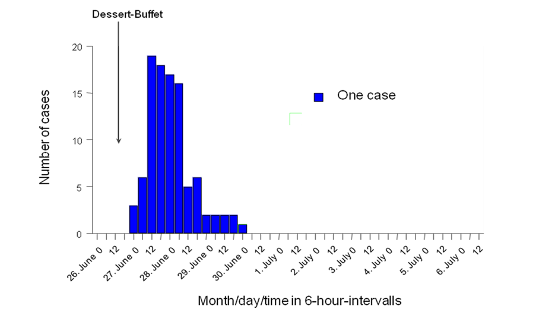

ebola_linelist %>%
filter(
age > 25,
district == "Bolo"
)
MVA - Multivariable analysis
Case study: An Outbreak of Gastroenteritis in Stegen, Germany
Authorship
Original authors: This case study was first designed by Alain Moren and Gilles Desve for EPIET. It is based on an investigation conducted by Anja Hauri, RKI, Berlin, 1998.
Data source: Data is fictional and was inspired by Nygren et al. Tick-borne encephalitis: acute clinical manifestations and severity in 581 cases from Germany, 2018-2020. Journal of Infection. 2023 Apr 1;86(4):369-75
Adapted and modified by: Alicia Barrasa (EPIET), Ioannis Karagiannis (Public Health England - PHE), Giri Shankar (Public Health Wales), Niklas Willrich (Robert Koch Institute-RKI), Patrick Keating (Austrian Agency for Health and Food Safety-AGES), Alexander Spina (AGES), Daniel Gardiner (PHE), Lukas Richter (AGES), Liese Van Gompel (MedEPIET), Kostas Danis (MedEPIET) and Alberto Mateo Urdiales (Istituto Superiore di Sanità - ISS)
Instructions
Getting Help
There are several ways to get help:
- Look for the “hints” and solutions (see below)
- Post a question in Applied Epi Community with reference to this case study
Hints and Solutions
Here is what the “helpers” look like:
Click to read a hint
Here you will see a helpful hint!
Click to see the solution
Here is more explanation about why the solution works.
Posting a question in the Community Forum
… description here about posting in Community… TO BE COMPLETED BY APPLIED EPI
Terms of Use
Disclaimer: The information presented in this exercise and the associated data files have been deliberately changed so as to facilitate the acquisition of the learning objectives for fellows of EPIET, EUPHEM and EPIET-associated programmes. This case study was first introduced in 2022 (see Copyright and Licence agreement for more information).
You are free:
- to Share: to copy and distribute the work
- to Remix: to adapt and build upon the material
Under the following conditions:
Attribution: You must attribute the work in the manner specified by the author or licensor (but not in any way that suggests that they endorse you or your use of the work). The best way to do this is to keep as it is the list of contributors: sources, authors and reviewers.
Share Alike: If you alter, transform, or build upon this work, you may distribute the resulting work only under the same or similar license to this one. Your changes must be documented. Under that condition, you are allowed to add your name to the list of contributors.
Notification: If you use the work in the manner specified by the author or licensor, Walter@rki.de
You cannot sell this work alone but you can use it as part of a teaching.
With the understanding that:
Waiver: Any of the above conditions can be waived if you get permission from the copyright holder.
Public Domain: Where the work or any of its elements is in the public domain under applicable law, that status is in no way affected by the license.
Other Rights: In no way are any of the following rights affected by the license:
Your fair dealing or fair use rights, or other applicable copyright exceptions and limitations;
The author’s moral rights;
Rights other persons may have either in the work itself or in how the work is used, such as publicity or privacy rights.
Notice: For any reuse or distribution, you must make clear to others the license terms of this work by keeping together this work and the current license.
This licence is based on http://creativecommons.org/licenses/by-sa/3.0/
Feedback & suggestions
- You can write feedback and suggestions on this case study at the ECDC GITHUB
- Alternatively email us at: [ECDC CONTACT MAIL]
Version and revisions
Write date of first version
Write any revisions made to the case study
| Date | Changes made | Author |
|---|---|---|
| 2015 | The case study has been divided in two parts: the first includes descriptive, univariable and stratified analysis as pre-module homework; the second includes logistic and binary regression (not shown here). Unnecessary toponymes were removed. | Alicia Barrasa (EPIET) and Ioannis Karagiannis (Publich Health England-PHE) |
| 2017 | Questions were rephrased to reflect real life scenarios (rather than academic exercise) | Alicia Barrasa (EPIET) and Giri Shankar (Public Health Wales-PHW) |
| 2017 | The case study was adapted to include the help on R | Niklas Willrich (Robert Koch Institute-RKI), Patrick Keating (Austrian Agency for Health and Food Safety-AGES) and Alexander Spina (AGES) |
| 2017 | Contribution to the R code | Daniel Gardiner (Public Health England-PHE) and Lukas Richter (AGES) |
| 2022 | Minor revisions to the R code and explanations | |
| 2023 | Major revision of the R code. R code was simplified and R tidyverse code was implemented | Liese Van Gompel (MedEPIET) |
| 2024 | Revision of the R code, i.e. use of |
EpiStas package for univariable and multivariable analysis, simplification and harmonisation of the R code| Kostas Danis (MediPIET)| | 2017 | Revision of content, structure, R code and adaptation of format to Applied Epi’s template of case studies | Alberto Mateo Urdiales (ISS) |
Guidance
Objectives of this case study
At the end of this case study, participants should: - know and be able to perform the fundamental steps of a descriptive statistical analysis of a foodborne outbreak (including quantitative assessment (frequency distributions, missing values, means/medians/modes, quartiles/SDs) and visualization of the data (histogram, boxplot)) - be able to perform univariate statistical analysis to identify potential vehicles of a foodborne outbreak (including risk ratios and/or odds ratios, depending on the design) - know why and how stratification can be conducted in datasets related to an outbreak investigation - be able to conduct a stratified analysis with respect to potential risk factors and confounders/effect modifiers - know how to use multivariable methods to quantify potential risk factors and control for confounding and/or effect modification
Previous level of expertise assumed
Participants are expected to be familiar with data management and basic analysis in R.
Preparation for the case study
Download folder named stengen_mva and extract contents in the local laptop
Create an Rstudio project in the folder stengen_en. If you are unsure on how to do that, read the EpiRhandbook Chapter on R projects
Inside the folder “stengen_en”: Subfolder “data” contains a raw data file named tira.csv. This is the only data file you will use in this case study.
Subfolder scripts should be used to save any scripts related to the analysis. Inside “backup” you will find a solution script with the code of the case study named stengen_mva_backup.R.
Subfolder “outputs” could be used to store all outputs (tables, graphs, documents) that are the result of the analysis
Part 1 - Scenario, study design and analysis plan
Introduction
On 26 June 1998, the St Sebastian High School in Stegen (school A), Germany, celebrated a graduation party, where 250 to 350 participants were expected. Attendees included graduates from that school, their families and friends, teachers, 12th grade students and some graduates from a nearby school (school B).
A self-service party buffet was supplied by a commercial caterer in Freiburg. Food was prepared on the day of the party and transported in a refrigerated van to the school.
Festivities started with a dinner buffet which opened from 8:30 pm onwards and were followed by a dessert buffet offered from 10 pm. The party and the buffet extended late during the night and alcoholic beverages were quite popular. All agreed it was a party to be remembered.
The alert
On 2nd July 1998, the Freiburg local health office reported to the Robert Koch Institute (RKI) in Berlin the occurrence of many cases of gastroenteritis following the graduation party described above. More than 100 cases were suspected among attendees and some of them were admitted to nearby hospitals. Sick people suffered from fever, nausea, diarrhoea and vomiting that lasted for several days. Most believed that the tiramisu consumed at dinner was responsible for their illness. Salmonella Enteritidis was isolated from 19 stool samples.
The Freiburg health office sent a team to investigate the kitchen facilities of the caterer. Food preparation procedures were reviewed. Food samples, except tiramisu (none was left over), were sent to the laboratory of Freiburg University. Microbiological analyses were performed on samples of the following: brown chocolate mousse, caramel cream, remoulade sauce, yoghurt dill sauce and 10 raw eggs.
The Freiburg health office requested help from the RKI in the investigation to assess the magnitude of the outbreak and identify potential vehicle(s) and risk factors for transmission in order to better control the outbreak.
The study
Cases were defined as any person who had attended the party at St Sebastian High School who suffered from diarrhoea (≥ 3 loose stool for 24 hours) between 27 June and 29 June 1998; or who suffered from at least three of the following symptoms: vomiting, fever ≥38.5°C, nausea, abdominal pain, and headache.
Students from both schools attending the party were asked through phone interviews to provide names of persons who attended the party.
Overall, 291 responded to enquiries and 103 cases were identified (attack rate: 35%). Among these cases, 84 (82%) received medical treatment and four were admitted to hospitals. Attack rates by age group were 36.6% for persons <20 years, 32.1% for persons 20 to 29 years, and 36.8% for persons older than 29 years.

QUESTION 1. What would be your hypothesis concerning the source of the outbreak?
Click to see the solution
The shape of the epidemic curve and the attendance to a single event (a buffet) pointed towards a foodborne outbreak related to a point source of infection.
QUESTION 2. What study design would you choose to test this hypothesis?
Click to see the solution
Using the updated list of attendants, a retrospective cohort study including all attendants to the party (that could be reached) was conducted. All had received a standard questionnaire asking for demographic information, signs, symptoms and duration, admission to hospital, and food and beverages consumption at the party including amount consumed. Food-specific attack rates were computed for more than 50 food items and beverages.
Question 3. What would your overall plan of analysis be?
Click to see the solution
Perform data cleaning - For each variable, look at the range, unexpected and missing values. - Correct data using the original forms used if needed
Describe each variable - For each variable, describe frequency distributions including missing values and, if needed, means, median, modes, quartiles, standard deviation, outliers - Make appropriate histograms and box plots - Choose relevant characteristics to describe the population
Identify the outbreak vehicle if any - Chose the appropriate measure of association - Chose the appropriate statistical tests and significance level - Calculate food-specific attack rates - Look at the proportions of cases exposed - Calculate the percentages of cases exposed to each exposure - Search for any dose-response relationship if appropriate - Interpret the results
Perform a stratified analysis - Identify the variables that are potential effect modifiers (EM) and confounders - Design appropriate stratification tables - Stratify on each level taken by the EM and confounders - Compute appropriate measurements to identify confounding and effect modification - conduct appropriate statistical tests - Interpret the results
Perform a multivariable analysis - This will be discussed during the module.
Part 2 - Descriptive, univariate and stratified analysis with R
Step 1: Set up
Step 1.1: Create a new R script
Once you have created an Rproject inside the “stengen_mva” folder (as specified in the second point of the section Preparation for the case study). Create a new script with the name stengen_analysis and save it in the subfolder “scripts”. If you are familiar with Rmarkdown, you may decide to use this type of file instead of a standard R script.
Step 1.2: Define R language
Depending on where you are and how you carried out R installation, your language “locale” might be different from the language of the graphs that you want to produce. For example, a french person might have a french “locale”. If that is the case, when creating a graph by day of the week, Monday will be displayed as “lundi”. If that french person wants to create an English report, as for this case study, the language “locale” should be changed.
Task: Ensure your “locale” is in English and change it into English if it is not. If you don’t know how to do this try finding it online (searching for online help is an important skill for R users!). Otherwise, see the solution below
Click to see a solution (try it yourself first!)
# To see your language locale
Sys.getlocale()
# To change it into English
Sys.setlocale("LC_ALL", "English")Step 1.3: Install/load packages
Install and load the following packages: rio, skimr, janitor, gtsummary, broom, rstatix, ggfortify and tidyverse.
You can find more about installing/loading packages in the Packages section of the EpiRhandbook.
Click to read a hint
You may end up using a long list of packages. Unfortunately different packages have functions with the same name. For example, the package {dplyr} (already installed with {tidyverse}) has a function called select() which we frequently use to subset columns of a data frame. But other packages such as {MASS} do also have a function called select(). This could create headaches if you want to subset columns using dplyr’s select() but R thinks you’re calling MASS’s select() (we call this masking - dplyr::select() is masked by MASS::select()). Given that you are more likely to use functions from {tidyverse}, ensure that this is the last package in your p_load() list so that functions from {tidyverse} (including {dplyr} functions) will always “prevail”.
Click to see a solution (try it yourself first!)
# Ensures the package "pacman" is installed
if (!require("pacman")) {
install.packages("pacman") }
pacman::p_load(
rio, # to import datasets
skimr, # for displaying your data
janitor, # a package for data cleaning
gtsummary, # to create frequency tables
rstatix, # to generate summary statistics
EpiStats, # for univariable and stratified analysis
tidyverse # data management and visualization
)Step 2: Import and explore data
Step 2.1: Import the data
Task Import the data frame called “tira.csv” inside the “data” subfolder.
Click to read a hint
If you are working within a project, finding the path to the dataframe should be relatively straightfoward. A “.csv” file is a “Comma-separated Values” file. . You can import this dataframe using the read.csv() which comes already pre-installed in R. However, we recommend that you use the import() function from {rio} because, as you may remember, this function will recognise the file type and import it whether the file is from R, Stata, excel or many others. If you have any doubts about importing review the Import and export chapter of the EpiRhandbook.
Click to see a solution (try it yourself first!)
# Import the dataset 'tira.csv'
tira_raw <- import("data/tira.csv") Step 2.2: Explore the data
Task: Explore the data trying to answer the following questions:
QUESTION: How many rows and columns does the dataframe have?
QUESTION: How many cases have ‘age’ missing?
QUESTION: What is the class of the column ‘salmon’?
QUESTION: What is the class of the column ‘dateonset’?
QUESTION: How many cases drank beer at the party?
Click to read a hint
An efficient way to explore data is to use the function skim() from the {skimr} package, as it gives you all the information needed with only one command. Of course, there are several alternatives. You can also have a look at glimpse() from {dplyr}, for example.
Click to see a solution (try it yourself first!)
# Inspect your dataset and generate basic statistics using the skim function
skim(tira_raw)
glimpse(tira_raw)Step 3 Clean the data
You might notice that most of the columns are of class ‘integer’. However, most variables consist out of 1 (present) and 0 (absent) values. For some of the following analyses, we will need R to treat these variables as factors (i.e., categorical variables).
Task: Change all present (1) / absent (0) variables from integer to factors.
Click to read a hint
You can do this one by one, or you could do all at the same time using the across() function from {dplyr}. If you are not sure how to use the across() function, read the section on Transform multiple columns from the EpiRhandbook.
Click to see a solution (try it yourself first!)
tira_clean <- tira_raw %>% # tira_clean will be out clean dataframe after we have performed cleaning tasks on tira_raw
# this would be changing one-by-one the columns into factors
mutate(ill = as.factor(ill)) %>%
# this would change all columns we are interested into 'factors' in only one command
mutate(across(.cols = !c(uniquekey, dateonset, age, mportion, tportion), # with the exclamation mark before c() we are telling R that we want all columns, except those in the c() list, to be transformed into factors
.fns = ~ as.factor(.x)))
# Check that the changes have been succesful
glimpse(tira_clean)